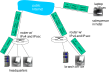
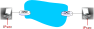
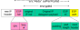
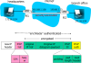
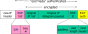

Aula 17 - Segurança: VPNs, IPSec
Diego Passos
Universidade Federal Fluminense
Redes de Computadores II
Na Última Aula...
SSL:
Secure Sockets Layer
.
“TCP Seguro”.
Amplamente difundido
na Internet.
Suporte nativo de
browsers
.
Base do HTTPS.
Pode ser entendido como uma camada de segurança
entre TCP e aplicação
.
SSL provê:
Confidencialidade, integridade, autenticação
.
SSL: fases.
Handshake
: autenticação, escolha de cifras, segredo compartilhado.
Derivação de chaves:
4 chaves
.
Transferência de dados: em
registros
.
Fechamento de conexão: importante, mensagens especiais.
SSL:
handshake
.
Múltiplas cifras suportadas:
negociação
.
Nonces impedem
ataques de repetição
.
SSL: registros.
Tamanho
variável
.
Campos: tamanho, tipo, versão.
Registros possuem
MACs individuais
.
Computado sobre dados, cabeçalho e
número de sequência implícito
.
Número de sequência evita ataques do tipo
man-in-the-middle
.
SSL: autenticação.
Feita através de
certificados
.
Segurança na Camada de Rede: IPsec
O Que Confidencialidade na Camada de Rede?
Entre duas entidades de rede:
Entidade transmissora cifra
payload
do datagrama.
Payload
pode ser:
Segmento TCP ou UDP, mensagem ICMP, mensagem OSPF...
Todos os dados enviados de uma entidade para outra seria escondidos.
Páginas web, e-mail, transferências de arquivos P2P, pacotes TCP SYN...
“Cobertura total”.
VPNs: Virtual Private Networks (I)
Motivação:
Instituições comumente desejam ter redes privadas por razões de segurança.
Alto custo: roteadores separados, enlaces próprios, infraestrutura de DNS.
VPN: tráfego interno da instituição é transmitido através da Internet pública, ao invés de usar estrutura dedicada.
Criptografado antes de entrar na Internet pública.
Logicamente separado de outros tráfegos.
VPNs: Virtual Private Networks (II)

Serviços do IPSec
Integridade de dados.
Autenticação da origem.
Prevenção de ataques de repetição.
Confidencialidade.
Dois protocolos proveem diferentes modelos de serviço:
AH.
ESP.
IPSec: Modo Transporte

Datagrama IPSec emitido e recebido por sistemas finais.
Protege protocolos de camadas superiores.
Pacote da camada de transporte (incluindo cabeçalhos) é protegido e encapsulado em datagrama IP.
IPSec: Modo Túnel
Datagrama IP
original
é encapsulado em um cabeçalho IPSec.
Esta unidade, por sua vez, é
encapsulada em um novo cabeçalho IP
.
Roteadores de borda são
IPSec-Aware
.
Hosts são
IPSec-Aware
.
IPSec: Dois Protocolos
Authentication Header (AH) Protocol
:
Provê autenticação da origem e integridade de dados, mas não confidencialidade.
Encapsulation Security Protocol (ESP)
:
Provê autenticação da origem, integridade de dados
e confidencialidade
.
Mais comumente utilizado que o AH.
Foco da aula.
Quatro Possíveis Combinações!
Modo Transporte com AH
Modo Transporte com ESP
Modo Túnel com AH
Modo Túnel com ESP
↑
Mais comum e importante!
Associações Seguras (SAs)
Antes de enviar dados, uma
“associação segura”
é estabelecida entre as entidades de origem e destino.
SAs são simplex: funcionam apenas em uma direção.
Entidades de origem e destino mantêm informação sobre a SA.
Lembre-se: os terminais de uma conexão TCP também mantêm estado.
IP não é orientado a conexão. Mas o IPSec é!
Quantas SAs em uma VPN com matriz, franquias e
n
vendedores viajantes?
Exemplo de SA de R1 para R2
R1 armazena para a SA:
Identificador de 32 bits da SA:
Security Parameter Index (SPI)
.
Interface de origem da SA (200.168.1.100).
Interface de destino da SA (193.68.2.23).
Tipo de criptografia usada (
e.g.
, 3DES com CBC).
Chave de criptografia.
Tipo de verificação de integridade (
e.g.
, HMAC com MD5).
Chave de autenticação.
Base de Dados de Associações Seguras (SAD)
Terminal armazena estado da SA em uma
Base de Dados de Associações Seguras (SAD)
.
Informações das SAs podem ser consultadas quando necessário.
Com
n
vendedores, 2 + 2n SAs na SAD de R1.
Quando um datagrama IPSec é enviado, R1 acessa a SAD para determinar como processar o datagrama
Quando o datagrama IPSec chega a R2, R2 encontra o SPI no pacote, usa-o para indexar a SAD e processa o datagrama de acordo.
Datagrama IPSec
Modo túnel com ESP.

O Que Acontece?

R1: Converter o Datagrama Original em um Datagrama IPSec
Adiciona ao final do datagrama original (o que inclui os cabeçalhos originais!) um campo “ESP trailer”.
Criptografa o resultado usando o algoritmo e chave especificados pela SA.
Adiciona ao início desta unidade criptografada o “cabeçalho ESP”, criando uma “enchilada”.
Cria um MAC sobre toda a “enchilada”, usando o algoritmo e chave especificados pela SA.
Adiciona o MAC ao final da “enchilada”, formando um
payload
.
Cria um novo cabeçalho IP, com todos os campos clássicos do IPv4, o qual é adicionado ao início do
payload
.
Dentro da Enchilada

ESP trailer: padding usado para as cifras de bloco.
ESP header:
SPI, para que entidade receptora saiba o que fazer.
Número de sequência, para evitar ataques de repetição.
O MAC no campo ESP auth é criado com uma chave secreta compartilhada.
IPSec: Números de Sequência
Para cada novo SA, origem inicializa o número de sequência para 0.
A cada novo datagrama enviado no SA:
Origem incrementa o número de sequência.
Valor é colocado no campo seq #.
Objetivo:
Prevenir que atacante monitore e repita um pacote.
Recebimento de pacote autenticado duplicado pode interromper o serviço.
Metodologia:
Destino verifica se pacotes estão duplicados.
Não guarda informação de
todos
os pacotes recebidos. Ao invés disso, utiliza uma janela.
Base de Políticas de Segurança (SPD)
Política: para um dado datagrama, entidade de origem precisa saber se deve usar IPSec.
Também precisa saber qual SA usar.
Informações disponíveis: endereços IP de origem e destino, e número do protocolo.
Informação no SPD indica “o que” fazer com datagrama recebido.
Informação no SAD indica “como” fazer.
Serviços IPSec: Sumário
Suponha que Trudy está em algum ponto da rede entre R1 e R2. Ela não conhece as chaves.
Trudy será capaz de ver o conteúdo original do datagrama? E quanto aos endereços IP de origem e destino, protocolo de transporte e porta da aplicação?
Será capaz de alterar bits sem que isso seja detectado pelo receptor?
Se passar por R1 utilizando o endereço IP de R1?
Repetir um datagrama original de R1?
IKE: Internet Key Exchange
Exemplos anteriores:
estabelecimento manual dos SAs do IPsec nos terminais IPSec.
Exemplo de SA:
SPI: 12345.
IP de origem: 200.168.1.100.
IP de destino: 193.68.2.23.
Protocolo: ESP.
Algoritmo de criptografia: 3DES-cbc.
Algoritmo HMAC: MD5.
Chave de criptografia: 0x7aeaca...
Chave do HMAC: 0xc0291f...
Estabelecimento manual de chaves para VPNs de centenas de terminais é impraticável.
Ao invés disso, utiliza-se o
IPsec IKE (Internet Key Exchange)
.
IKE: PSK e PKI
Autenticação (provar sua identidade) com uma de duas alternativas:
Uma chave pré-compartilhada (PSK).
Uma PKI (chaves pública/privada e certificados).
PSK: ambos os lados já começam com um segredo.
IKE é executado para autenticar os lados e para gerar as SAs do IPsec (uma em cada direção), incluindo chaves de criptografia e autenticação.
PKI: ambos os lados começam com um par de chaves pública/privada e um certificado.
IKE é executado para autenticar os lados, obter as SAs do IPsec (uma em cada direção).
Similar ao
handshake
no SSL.
Fases IKE
Duas fases:
Fase 1:
estabelecer uma SA bidirecional do IKE.
Note que a SA do IKE é diferente da SA do IPsec.
Diffie-Hellman.
Fase 2:
a SA do IKE é usada para a negociação segura do par de SAs do IPsec.
A fase 1 tem dois modos: agressivo e principal.
Modo agressivo usa menos mensagens.
Modo principal provê proteção da identidade e é mais flexível.
IPSec: Sumário
Troca de mensagens IKE para algoritmos, chaves secretas e números de SPI.
Ou protocolo AH ou protocolo ESP (ou ambos).
AH provê integridade, autenticação da origem.
ESP (com AH) adicionalmente provê criptografia.
Pares IPsec podem ser dois sistemas finais, dois roteadores/firewalls, ou uma combinação destes.
Resumo da Aula...
IPSec: provê segurança na camada de rede.
Confidencialidade, integridade, autenticação da origem.
IPSec: dois protocolos.
AH: integridade e autenticação.
ESP: integridade, autenticação e confidencialidade.
IPSec: dois modos.
Transporte: carga útil do datagrama IP é cifrada/autenticada.
Túnel: datagrama IP
completo é encapsulado
em novo datagrama.
Esconde
completamente protocolo de transporte, portas,
...
Associações seguras: SA.
Canal de comunicação virtual entre duas entidades IPSec.
Simplex, mantém estado.
Algoritmos de criptografia, integridade, chaves, ...
IPSec: Gerenciamento de Chaves.
Protocolo próprio: IKE.
Leitura e Exercícios Sugeridos
IPSec:
Páginas 526 a 531 do Kurose (Seção 8.6).
Exercícios de fixação 24, 25 e 26 do capítulo 8 do Kurose.
Problemas 22 e 23 do capítulo 8 do Kurose.
Próxima Aula...
Terminaremos nossa discussão sobre segurança.
Últimos tópicos abordados:
Segurança em WLANs.
Segurança operacional.
Firewalls
.
Gateways
de aplicação.
Sistemas de detecção de intrusão.